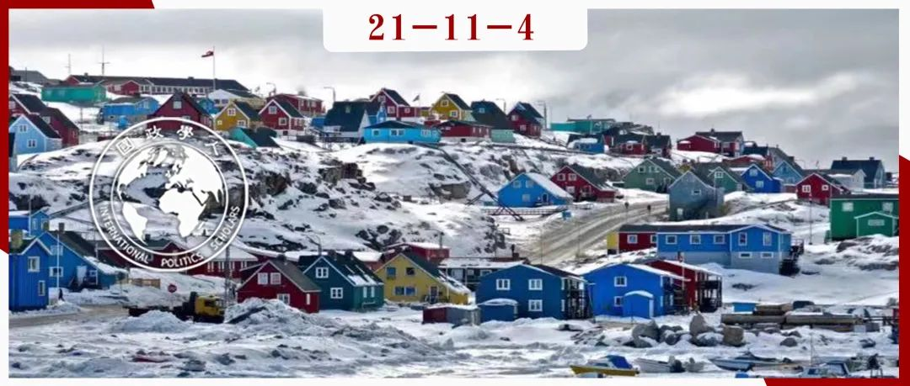

收录于合集 #《国际关系前沿》2021年第11期 18个

作品简介
作者： Beverly Kay Crawford，加州大学伯克利分校（the University of California, Berkeley）政治学名誉教授，曾任伯克利德国和欧洲研究中心（Berkeley’s Center for German and European Studies）主任。
编译： 林怡娉（国政学人编译员，外交学院国际关系专业硕士生）
来源： Crawford BK. Explaining Arctic peace: a human heritage perspective. International Relations. 2021;35(3):469-488. doi:10.1177/00471178211036782
归档： 《国际关系前沿》2021年第11期，总第38期。

内容摘要
北极地区存在潜在的紧张局势、迅速消融的冰川，然而该地区却缺乏有效的全面治理机制来缓和气候变化危机或管理可能出现的冲突。尽管如此，北极却仍然没有发生国家间的暴力事件。传统国际关系理论无法解释北极没有此类暴力冲突的境况。在国际关系理论的范畴之外，本文扩展了人类遗产方法（Human Heritage approach），发现北极地区包含一个由地方、区域、国家和泛北极层次的制度和协议所构成的相互重叠的治理网络。这种非正式的治理制度网络保护着人类的遗产和安全，为北极国家提供了解决争端冲突的合作环境。
文章导读
01
介绍
在缺乏全面的北极治理机制的情况下，什么因素促使北极地区没有发生危险的国家间暴力冲突，甚至存在区域合作？作者认为， 传统国际关系理论无法解释北极地区诸多议题领域的区域合作及暴力的持续缺失 。没有人注意到， 目前的北极安排如何保护人类遗产和自然资源、如何提供机制以平息北极行为体之间的相关冲突。
历史上，北极地区不寻求在一个共同机制下的区域一体化，但作者指出，尽管规避了全面治理的方式，北极仍然受一些相互重叠的地方政权和国家组成的网络所支配，不同行为体在其中参与到环境共同管理、经济开发、科研和安全合作等等领域。这些网络在保护环境、塑造整个地区的合作特质以及和平解决争端方面发挥着显著作用。
作者在传统国际关系理论的范畴之外， 审视了北极的分权治理、原住民参与和混合知识基础，这些要素有助于塑造北极独特的安全环境。作者拓展了玛丽安·里的沃尔德（Marianne Riddervold）和阿卡塞米·纽瑟姆（Akasemi Newsome）针对全球公域的人类遗产方法，认为传统知识、原住民的参与以及地方和区域层面的非正式和正式的北极治理网络，有助于保护自然环境、保障人类安全，维护北极的人类和环境遗产，并且创造了一个为争端解决提供有效激励的合作环境。 正是这些网络的力量、其原住民参与方、规范性承诺和塑造它们的知识，有助于解释该地区没有国家间暴力冲突及自然和人类遗产受到维护的原因。
02
解释北极和平的理论视角
2.1. 结构现实主义
**
**
结构现实主义理论无法解释北极没有大国冲突的原因。 现实主义理论基于国家理性自利的假设，通过潜在的结构性条件，如全球无政府状态及主权国家间缺乏权威，来解释不可避免的权力竞争、冲突和暴力。无政府状态导致国家之间的不安全感，不安全感导致国家间产生安全困境，安全困境引发军备竞赛和战争。
一些北极评论员和负责官员的声明呼应了结构现实主义的观点，然而， 尽管北极缺乏全面的区域治理机制近2个世纪，但该地区的民族国家之间仍然保持着和平的关系，即便在冷战最激烈的时期也是如此。 这削弱了结构现实主义关于无政府状态导致暴力冲突的假设。
2.2. 自由制度主义
**
**
自由制度主义提出了世界各地的冲突何以维持和平的原因。 自由制度主义认为，自利的国家通过构建和加入国际制度来管理它们之间的相互依存，执行一套通用的规范和规则，从而减少它们所处环境的不确定性。
一些学者认为，北极国家应该通过创建一个国际条约组织来纠正目前的治理缺陷，可能是依照《南极条约》（Antarctic treaty）的思路。这种观点基于一种假设，即北极类似于南极或深海底，属于可以遵从这一方式管理的“全球公域（global common）”。全球公域指在国家边界外，所有国家都能进入的区域。然而实际上，除了北极点周边，北极并非国际法范畴中定义的全球公域，但北极国家拥有地球生命所需的全球公共资源（global commons resources）。因此，其他学者提出了另一些治理方案：建立一个更松散的北极机制或强化现有的法律制度——包括《联合国海洋法公约》、将北极纳入其他现有的国际机制或一个由管理特定议题领域的制度组成的“机制复合体”。
2.3. 建构主义
**
**
建构主义为北极合作及非暴力解决争端的可能原因提供了三个有价值的见解。 第一，建构主义关注非国家行为体对国家和国际关系的影响。第二，建构主义为非国家行为体、国家与自然环境的关系，以及这种关系如何促进它们合作提供了新解释。第三，建构主义认为规范和身份能够强于自利，成为解释行为体跨国行为的因素；在解决国际问题方面，促进合作和外交规范能够胜于军事行动。例如，北极理事会的活动是由基于促进和平、环境正义和环境保护、尊重原住民权利、可持续发展以及关注人类安全和人类遗产的“软法”规范推动的。其规范的传播及其活动的规范焦点影响着北极治理的各个层次。 原住民文化和身份的作用在北极治理中日益显著，而这种作用几乎被其他两个学派忽视了。
03
拓展人类遗产模型（the human heritage model）：知识、原住民参与和网络化分散制度的作用
为弥补上述理论视角的解释缺陷，作者在建构主义的框架中引入了里的沃尔德和纽瑟姆的人类遗产模型。两位学者首先假定行为体可以被目标而非简单的自利所驱动；行为体可以是“超社会性”的，因为它们具有同理心、合作精神并关心他者；考虑到后代的健康和安全，尤其是在保护环境方面，它们建立以规范为基础的政策和管理制度。但他们承认，主要围绕国家主权组织现有机制的全球治理替代模式，鲜少在文献中得到操作化。
作者通过关注原住民非国家行为体、他们的知识、文化、规范、身份以及一种治理的替代模式，扩展了上述两位学者的“人类遗产模型”，并对这种治理的替代模式进行了操作化。为达成后一目的，作者修正了自由国际主义，侧重于网络化的地方治理。 作者认为北极治理是一个分散和重叠的“公共财产制度（common property regimes）”网络，混合了国家、地方和区域管理制度，其“软法”规范和实践建立在原住民超社会文化合作的基础上，以确保北极地区的人类和环境安全，保护人类遗产以应对气候危机和潜在的军事不稳定。
**
**
作者指出，对替代治理的关注也可解读成对彼得·哈斯（Peter Hass）关于认知共同体（epistemic communities）作用的观点的修正。哈斯将认知共同体定义为“具有公认专业知识和能力的专业人士组成的网络”，而 为解释相互关联的公共财产制度为何以及如何被人类遗产规范和促进合作的实践所塑造，作者将北极治理中的混合知识、原住民知识持有者视作认知共同体的参与者 ，不仅包括专业的西方科学家，还包括在特定领域拥有相关知识、加入到参与性和基于共同体的行动中的资源使用者，这类资源使用者包括北极原住民。在北极地区，原住民通过成功的土地申索和扩大的权利，成为了独立的政治行为体，能够在民族国家内外传播他们的知识和实践。他们对自然资源的管理、了解和主张使之在北极治理的各个层次成为强大的利益攸关方。
公共财产文献描述了这些行为体在管理制度中拥有的权力，在这类制度中，资源的集体使用被嵌入到利益、知识和资源本身的三位一体中。北极国家政府仍然行使最终的控制权，但越来越多地屈从于包括原住民在内的认知共同体。
3.1. 管理公共池塘资源（common pool resources）
**
**
埃莉诺·奥斯特罗姆（Elinor Ostrom）关于公共池塘资源和公共财产制度的理论解释了北极治理的稳定性和有效性。 公共池塘资源与全球公共资源重叠，根据产权的普遍特征，它们被视为私有财产边界之外的本地资源，供多个行为体使用。公共池塘资源和全球公共资源都受到哈丁“公地悲剧”观点的影响，即所有行为体都试图利用公地的区域和资源来获取个体利益，直到公地及其资源被摧毁。奥斯特罗姆赞同哈丁的观点，但与哈丁不同，她认为私有化不是解决之道。 地方公共财产制度/机制可以在没有私有化、主权资源控制、全球体制或区域一体化的情况下有效管理公共池塘资源。
公共财产制度和全球公域的治理之间存在重要区别：前者对一种资源进行管理，而排除其他行为体的使用权。 例如，原住民对北极土地的主权。尽管这些土地具有私有化的特征，但也在共同体内创造了具有约束力和权威性的规则和执行手段，从而保护公共池塘资源。如果这些地方制度奉行保护环境的政策并互相建立网络，该地的公共池塘资源就将得到保护，其成员也将学会合作。
地方公共财产制度成功的另一个重要因素是资源的规模。 更小的区域更易发现对资源的威胁。在地方公共财产制度中，成员更容易就这些威胁达成沟通、更迅速地采用规则来减轻威胁。由于地方公共池塘资源限定在一个相对较小的明确界定的地区，资源使用者已经发展了关于其特点和可持续性的最佳实践的知识。
地方公共财产制度植根于具有高度超社会性的传统共同体时，往往特别有效。 在这些共同体中，违反规则的代价巨大，不仅会失去一部分资源，还会失去社会的认可和尊重。在北极，这些共同体主要由原住民组成。他们把自己和自己的生存视为自然环境及其生存的一部分。他们拥有环境保护知识，而若无他们的代表在内，机制就无法取得这种知识。 通过向这些利益攸关方授予安全的资源权利，地方公共财产制度可以加强生计安全，保护人类遗产，并限制破坏性的资源使用。
**
**
大多数北极治理制度都在协商一致的基础上开展工作，并且各层级都有地方代表参与。与传统治理相比，北极各级治理的等级更少、权力更分散。由于风险很高，考虑到极端条件和生存环境的重要性，共识、参与和磋商比通过交换选票来实现政策目标更为重要。决策的包容性实践产生了一个扁平化的等级结构，包括私营部门代表在内的各种利益攸关方都参与了决策过程。
3.2. 地方知识和西方科学
**
**
将利益攸关方整合到各级治理机制中，依赖于作为参与者的认知共同体；认知共同体产生了各级决策所需要的原住民知识和西方知识。原住民知识，又称传统生态知识（traditional ecological knowledge (TEK)）。TEK被定义为传统共同体的知识、实践和信仰，它们跨越国界，与超社会共同体中的环境有着错综复杂的联系。
TEK与现代科学能够相互补充。北极原住民观察其环境变化的出色能力比现代科学方法更加敏锐，能够察觉到西方科学忽略的气候变化。西方科学家也逐步认识到对生态系统的整体性认识需要西方科学与传统知识的结合。
尽管存在差异，但西方科学和TEK在可持续发展和环境安全的共同价值观下走向了合作。 这些共同的价值观使包括西方科学家和北极治理的原住民代表在内的混合认知共同体，在所有形式的全球、区域和地方治理中独具一格。
3.3. 知识与治理：维护人类遗产和促进合作
**
**
地方公共财产制度和被赋权的原住民在环北极地区至关重要。 在整个北极地区，国家和地方立法机构以及原住民组织在决策中发挥着核心作用。 自20世纪70年代以来，在对传统使用土地的主张和争取自决的长期法律斗争之后，原住民及其TEK在这些网络中的影响力有所增加。
许多原住民治理机制既维持了传统的内部结构，又具备与非本土同级机制合作或对抗的行政和法律能力。 在地方自治制度下，为了合理化其担类似国家的责任，原住民采用了传统民族国家的身份，同时，为了合法地享有传统的狩猎权利，他们也采用了原住民身份。由于他们为促进原住民自决提供了典范，他们在整个北极地区传播了TEK及其对人类遗产和人类安全的尊重。
3.4. 西方科学与TEK冲突的教训
**
**
尽管共享可持续发展的共同价值观，然而，这两个共同体的不同认识方式和相互矛盾的目标可能导致两者之间的直接冲突。 文化冲突和西方科学家对传统资源管理策略的反对有时阻碍了制度的整合。
3.5. 北极治理中的知识整合与共同管理
**
**
北极科学的三个特点提高了治理的有效性：1、TEK融入科学建议；2、原住民进入研究机构；3、地方共同体参与到知识的生产和传播当中。 高等教育机构已经开始将原住民纳入科学研究，为不同的知识形式建立新的对话中心。常设科学和教育机构的数量及原住民学生的数量正在增加。这些机构的原住民毕业生将受雇于北极治理的所有层级单位。随着原住民成为地方公共资源的共同管理者，他们创建了数以百计的地方和区域共同财产机制。
3.6. 促进北极的制度一体化：北极理事会
**
**
尽管这些地方共同管理倡议取得了成功，北极共同财产机制也普遍存在，但大多数资源管理问题必须通过跨界合作来解决。 这促使北极国家参与资源管理合作，以实现跨国界的环境保护和可持续发展。北极理事会负责协调这种合作。 它的优势在于创造了“软法”，即在整个地区使用准法律但不具约束力的工具。“软法”具有政治约束力，因为它产生规范性压力，促使人们在区域范围内致力于和平合作。 “软法”是北极特有的，侧重于可持续的资源管理，并从人类安全和人类遗产的角度解决气候变化和环境退化问题。
**
**
这为各级非国家行为体参与区域政策制定、国家通过合作建立互信提供了新的机会。例如原住民在北极理事会中的作用。 作为永久参与方，北极国家的所有决策都定期征求原住民组织的意见。这已经发展成为一种非正式做法，使之事实上拥有拒绝提案的否决权，并且已经成为国际范围内承认原住民自决权及其知识价值的典范。 理事会还在其资源评估过程中根据其保护人类遗产和人类安全的准则生产知识。 它创造了由科学家（包括传统的和西方的）、经济利益攸关方和决策者组成的国际共同体，他们在自己的地方治理机制内分享这些知识。
04
结论
在北极无政府状态的表面下， 存在一个运作良好的基层治理网络组成的深层结构，这一网络注入了催生了国家和区域制度的原住民知识，影响着北极国家的政策，并提供了促进合作、抑制冲突的非正式制度安排。
深究其原因，可以发现一种注重保护人类遗产和保障人类安全的资源管理精神。为了将这种精神转化为成功的政策，地方和区域公共财产制度依赖于传统和现代的科学观点。虽然全球公地的概念与西方科学知识紧密相连，但北极的网络化公共财产制度是由当地形式的TEK指导的。北极原住民共同体的权力日益增长，使北极各级的治理具有基于传统知识的整体视角。这一视角促进沟通、建设性的做法和调解性质的解决方案，从而促进了北极国家间合作。合作实践延续到国家间谈判，从而促进了北极和平。
译者评述
北极治理研究注重引入理论审视北极治理的现状、厘清北极治理的内容、剖析北极治理的制度性特征。北极治理研究多探讨国家主义和全球主义之争，并且多关注北极治理的宏观发展过程、梳理相关制度的宏观治理影响，比如探析北极国家等国家行为体的制度性互动、北极理事会等治理机制的运作方式及其影响。但本文却另辟蹊径。其创新性在于：第一，理论视角上，本文反思了传统国际关系理论的解释局限，进而在建构主义的框架内引入了人类遗产理论的内容来审视北极治理的特殊制度安排。本文运用这一理论，指出并梳理北极存在秉持保护人类遗产和人类安全的共同价值观、融入西方科学和原住民传统知识的地方公共财产制度，这种制度的区域传播和融合促进了区域合作。第二，研究内容上，本文考察了相对微观的北极基层行为体，着重强调了原住民群体及其传统知识在其中的建设性作用：北极原住民是北极地方公共财产制度的利益攸关方之一；同时，原住民的传统知识使之成为认知共同体的一部分。原住民及其传统知识及其价值观融入了地方公共财产制度所构成的多层次治理网络，进而影响了整体的北极政治状况。
北极治理的多层次、网络化的复杂特征，已经决定了北极治理研究需要进一步拓宽研究视野。原住民及其治理作用等相对微观的研究对象是北极治理研究不容忽视的范畴，但却因其复杂的现实处境和采取实证研究方面的困难，较少得到研究者的重视。据此，尽管存在实证性案例不足的问题，但本文的创新性理论视角和研究内容仍然能够为北极治理研究带来有益启发。
参考文献
张胜军、郑晓雯：《从国家主义到全球主义：北极治理的理论焦点与实践路径探析》，载《国际论坛》，2019年第 4 期，第3-18页。
词汇整理
人类遗产模型 human heritage model
公共池塘资源 common pool resources
地方公共财产制度 local common-property institutions
认知共同体 epistemic communities
传统生态知识
traditional ecological knowledge
责编 | 陈思涵 胡富钦
排版 | 林祉欣 黄伊蕾
文章观点不代表本平台观点，本平台评译分享的文章均出于专业学习之用, 不以任何盈利为目的，内容主要呈现对原文的介绍，原文内容请通过各高校购买的数据库自行下载。

国政学人
支持学术公益与知识传播
微信扫一扫赞赏作者 __赞赏
已喜欢，对作者说句悄悄话
取消 __
发送给作者
发送
最多40字，当前共字
上一页 1/3 下一页
长按二维码向我转账
支持学术公益与知识传播
受苹果公司新规定影响，微信 iOS 版的赞赏功能被关闭，可通过二维码转账支持公众号。